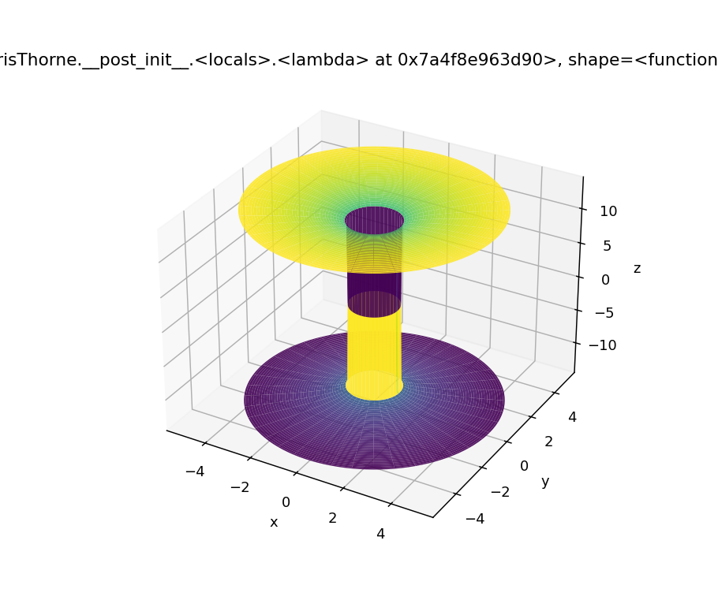
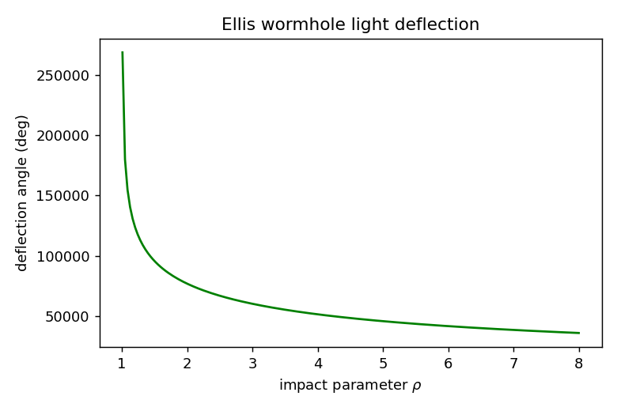

A unified, tested, reproducible Python framework for relativistic wormhole spacetimes — geometry, geodesics, energy conditions, and lensing.
A wormhole connects two regions of spacetime through a throat. The non-traversable Einstein–Rosen bridge (1935) pinches off behind a horizon; the traversable wormholes of Ellis–Bronnikov (1973) and Morris & Thorne (1988) stay open — but only if matter violates the null energy condition at the throat. Quantum field theory permits localized negative energy, yet the Ford–Roman quantum inequalities (1995) bound how much. This framework implements the classical, geometric side of that story: specify a metric, and obtain its curvature, exotic-matter content, geodesics, and lensing signature.
Static spherical throat with free
shape b(r) and redshift Φ(r); the canonical
exotic-matter wormhole.
Massless "drainhole" sourced by a phantom scalar; geodesically complete, curvature bounded; exact lensing.
Reissner–Nordström-like throat from the
Einstein–Maxwell system; charge Q stiffens the throat.
Stationary axisymmetric wormhole with
frame dragging ω(r) through the off-diagonal metric term.
The throat at b(r₀)=r₀ with flare-out b'(r₀)<1 forces,
via the field equations,
from core.metrics import EllisBronnikov
from numerics.geodesic import GeodesicSolver, null_initial_velocity
import numpy as np
wh = EllisBronnikov(b0=1.0)
x0 = np.array([0.0, 6.0, np.pi/2, 0.0]) # (t, r, theta, phi)
u0 = null_initial_velocity(wh, x0, [-1.0, 0.0, 0.05]) # an off-axis photon
res = GeodesicSolver(wh).integrate(x0, u0, affine_span=(0, 20))
print(res.coords[:,1].min() < 0) # True: the ray crossed the throat
Curvature is computed numerically from components(x), so
a new metric only needs that one method — geodesics, energy conditions and
embeddings then work automatically.

examples/run_demos.py).
| Method | Advantage | Drawback | Used for |
|---|---|---|---|
| Geodesic ODE (RK45/RK4) | Lightweight, norm-conserving | Stiff near singularities | Rays, particles, lensing |
| Finite difference | Simple local stencils | Low order | Scalar-wave evolution |
| Chebyshev spectral | Exponential convergence | Global coupling | Static field BVPs |
| AMR (external) | Resolves throat gradients | Overhead | Einstein Toolkit evolution |